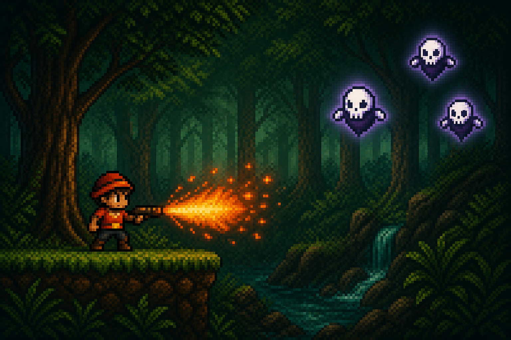
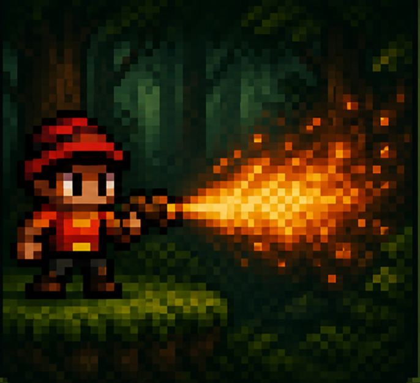
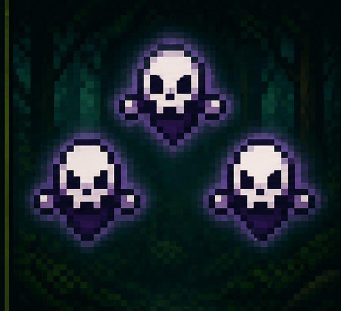
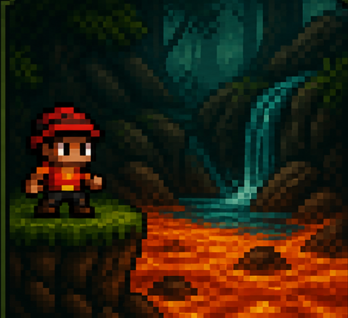

Hemen daukazu jokuaren istoriaren azalpena:
ISTORIOA 
Zuk, Super Mario Bros. joko guztiak gainditu ondoren, basora sartzea erabakitzen duzu, eskuan su-jaurtigailu batekin, maila berri batean bezala. Txoriak mamuak direla sinesten duzu, eta sua jaurtitzen diezu. Ura ikustean, laba dela pentsatzen duzu, eta salto egitera behartuta zaude. Zure helburua txanpon guztiak biltzea, mapa guztiak bidaiatzea eta haietatik kaltetu gabe ateratzea izango da 


Su- jaurtigailua Txoriak ez dira txoriak Ura ez da ura Eskuan su-jaurtigailu batekin, aurrean duzun guztia suntsitu. Txoriak mamuak direla sinisten duzu, eta sua jaurtitzen diezu. Ura iksutean, laba dela pentsatzen duzu, eta salto egitea behartuta zaude. ITZULI NAGUSIRA